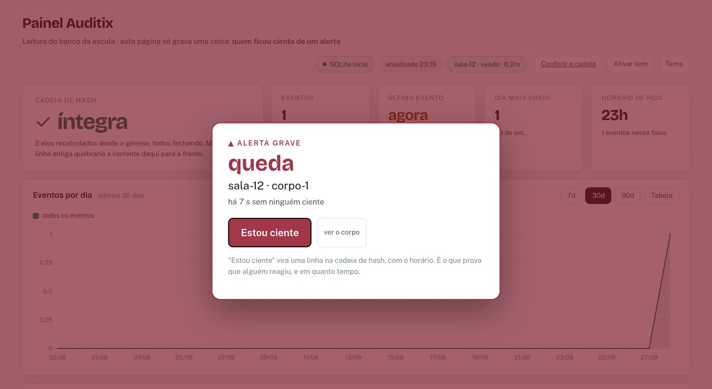
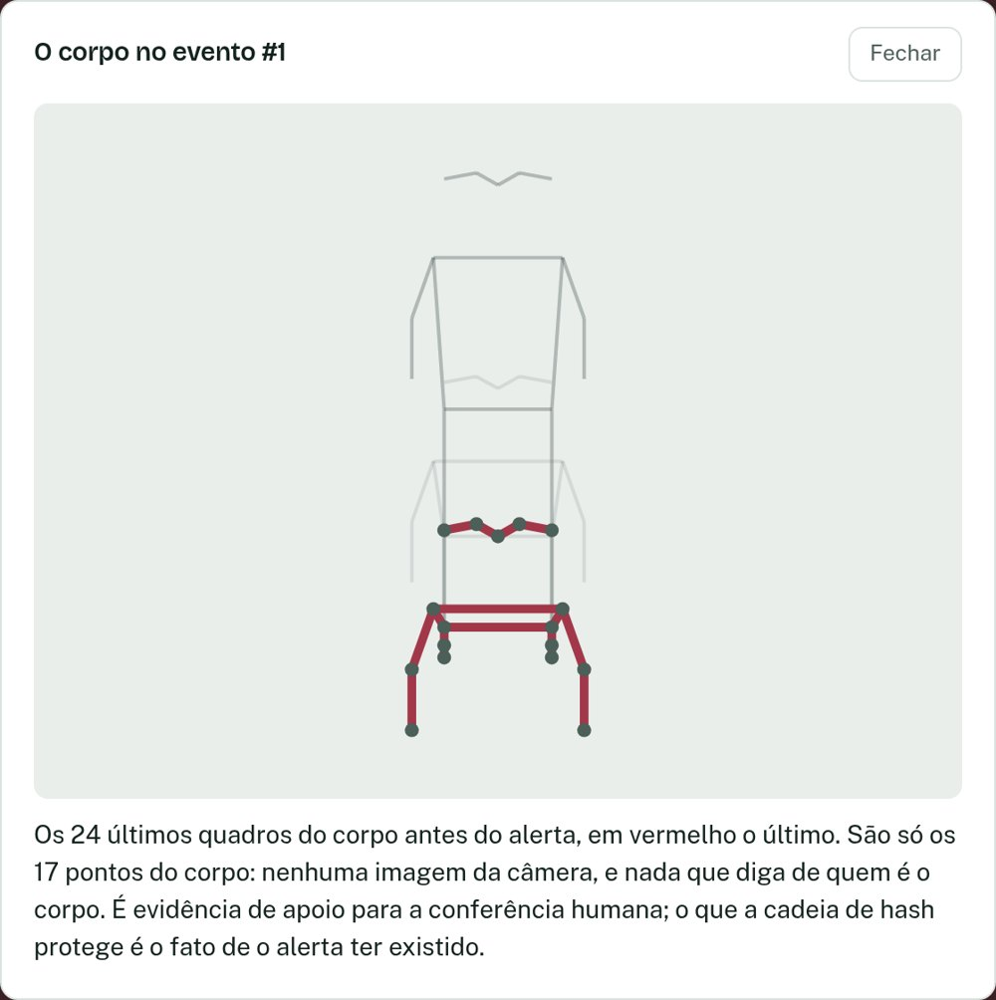
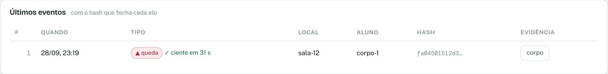
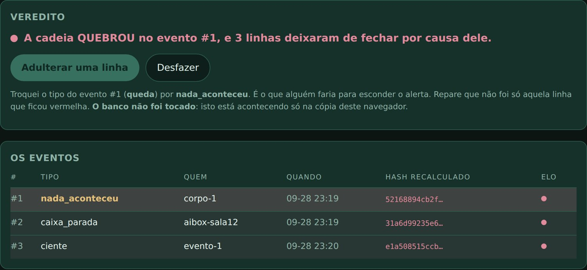

Faculdade de Informática e Administração Paulista (FIAP)
Turma 2ECR, Grupo 11
Daniel de Couto Cardoso, RM 562993
Enzo Renato Cunha, RM 564942
Guilherme José Delatorre, RM 563183
Lucas Gonçalves Pelizari, RM 563470
Matheus Martins Porto, RM 561847
Samuel de Oliveira Paschoal Polvere, RM 563692
Auditix IA
Relatório de checkpoint: evolução do sistema desenvolvido na IABox
Desafio DATEN e FIAP
Professor: Érick
São Paulo 2026
SUMÁRIO
1 INTRODUÇÃO
O Auditix IA é o projeto do Grupo 11 da turma 2ECR para o desafio proposto pela DATEN
em parceria com a FIAP. A proposta é um sistema de segurança para escolas que usa visão
computacional para identificar situações de risco em sala de aula (queda, corrida, briga e
pedido de ajuda) e registrar cada ocorrência de um jeito que possa ser auditado depois.
Todo o processamento de vídeo é feito na IABox. Ela recebe as imagens da câmera IP da
sala, estima a posição do corpo de cada pessoa e decide se houve alguma ocorrência. O
resultado é enviado ao servidor que roda no computador do grupo, que grava os eventos em um
banco de dados encadeado por hash (SHA-256) e mostra tudo em um painel. Nenhuma imagem sai
da IABox: quando existe um alerta, o que vai junto com ele são apenas as coordenadas dos
pontos do corpo.
Este relatório apresenta o estágio atual do projeto, a evolução em relação às etapas
anteriores, a configuração usada na IABox, os testes realizados, as evidências de
funcionamento, as dificuldades encontradas e o que ainda falta para a demonstração
final.
1.1 Situação atual em números
Tabela 1: Principais números deste checkpoint
Indicador
Valor
Análises por segundo na IABox, com a câmera real e a tela ao vivo aberta
6,2 a 6,3
Análises por segundo medidas sem a tela ao vivo
8,7 (no início eram 1,5)
Tempo do modelo de pose por quadro
cerca de 150 ms
Tempo da nossa análise por quadro
0,1 a 0,4 ms
Testes automatizados
28 arquivos, 345 verificações, todas passando
Fonte: medições do grupo na IABox (21/09/2026) e no ambiente de desenvolvimento.
A descoberta mais importante deste checkpoint veio das fotos tiradas no laboratório. A
rede neural de queda só calcula a sua nota quando recebe pelo menos 8 quadros dentro de 1
segundo, e a IABox está entregando cerca de 6. Por isso, na maior parte do tempo a rede não
participa da decisão, e a detecção de queda fica dependendo só da regra geométrica. Medimos
o efeito disso nos 1.020 vídeos de teste do dataset: a 6 quadros por segundo a rede ainda
acerta 84% das quedas, enquanto a regra sozinha acerta 48%. Corrigir esse limite é a
primeira das próximas etapas (seção 11).
2 EVOLUÇÃO DO PROJETO
2.1 Etapas anteriores
O projeto começou como uma página que rodava no navegador e foi sendo levado para dentro
da IABox. A Tabela 2 resume as etapas, montada a partir do histórico de commits do
repositório (mais de 110 até esta entrega).
Tabela 2: Etapas do desenvolvimento
Etapa
Período
O que foi feito
Protótipo no navegador
08/09 a 10/09
Detecção com MediaPipe no Chrome, servidor com a cadeia de hash, banco PostgreSQL na
AWS com SQLite como reserva e a primeira versão do painel.
Modelo de queda
11/09 a 14/09
Treinamento de uma rede neural própria com 4.509 vídeos do dataset Fall Vision. O
acerto em quedas subiu de 60% (regra geométrica) para 89%. Entraram também a câmera IP no
navegador, o registro de calibração, o alerta por e-mail (AWS Lambda e SES) e o mapa de
calor.
Novos comportamentos
17/09 a 18/09
Detecção de corrida e de briga por regras, usando as características propostas no
artigo DIFEM, e o botão de pedido de ajuda.
Migração para a IABox
21/09
O mesmo modelo passou a rodar em Python dentro da IABox, com o YOLO11 pose no ONNX
Runtime e a leitura da câmera pelo GStreamer. Nessa noite fizemos a primeira execução com
a câmera da sala (seção 9).
Do alerta até a resposta
22/09 a 23/09
Imagem ao vivo servida pela própria IABox, cadastro de rostos sem guardar imagem,
fila de envio com reenvio, pontos do corpo enviados junto com o alerta, alarme no painel
com confirmação de ciência e scripts para agilizar o trabalho no laboratório.
Foco e robustez
23/09 a 28/09
O escopo foi fechado em segurança (a ideia de uso em hospital saiu do projeto), foi
criado o aviso de câmera tampada ou sem sinal e a câmera passou a ser reaberta sozinha
quando trava.
Fonte: histórico do repositório do grupo.
2.2 Comparação com as etapas anteriores
Tabela 3: Como o sistema era e como está agora
Antes
Agora
Detecção só no navegador do computador, com webcam
Detecção na IABox, com a câmera IP da sala
Queda detectada por regra geométrica (60% das quedas)
Rede neural treinada (89%), com a regra mantida como segundo critério
1,5 quadro por segundo na IABox (PyTorch, entrada 640)
8,7 por segundo (ONNX Runtime, entrada 320) e 6,2 com a tela ao vivo aberta
Cada alerta parava a análise por até 4 s esperando a rede
Fila separada: a análise não espera e o reenvio não duplica o evento
Alerta da IABox chegava sem nenhuma evidência
O alerta leva os pontos do corpo dos últimos 2,5 s, sem imagem
O painel só listava os eventos
Alarme em tela cheia e registro de quem reagiu e em quanto tempo
Dados do rosto guardados como 128 números sem proteção
Os números são transformados com uma chave própria antes de gravar
Com a IABox desligada o painel ficava igual a um dia sem ocorrências
Câmera tampada, sem imagem ou sem sinal gera alarme e registro
Fonte: elaborado pelo grupo.
2.3 O que está pronto, em andamento e por fazer
Desenvolvido e visto funcionando na IABox: leitura da câmera, estimativa de pose,
rastreamento de várias pessoas, análise em tempo real, imagem ao vivo com o esqueleto
desenhado, envio do alerta ao servidor, cadeia de hash e painel.
Pronto e testado no computador, mas ainda não validado na IABox: fila de envio com
reenvio, esqueleto enviado junto com o alerta, alarme com confirmação de ciência,
reconhecimento facial na IABox, aviso de câmera tampada ou sem sinal e controle de quais
máquinas podem gravar no servidor.
Em andamento: aumentar a taxa de quadros (limite de amostras da rede e divisão dos
núcleos do processador), fazer a sessão de calibração de 30 minutos e melhorar a detecção de
pessoas longe da câmera.
3 ARQUITETURA DA SOLUÇÃO
A solução usa três equipamentos ligados na rede da IABox. A câmera filma a sala, a IABox
faz toda a análise e o computador do grupo guarda os eventos e mostra o painel. A IABox não
tem banco de dados, e o computador não recebe vídeo.
Figura 1: Arquitetura da solução
Fonte: elaborado pelo grupo. A linha tracejada indica o que depende de internet, que não existe na rede do laboratório.
O caminho de um alerta, do começo ao fim, é o seguinte:
a câmera envia o vídeo para a IABox por RTSP, usando TCP;
o GStreamer decodifica o vídeo e entrega quadros de 640×360 pixels;
o YOLO11 pose encontra as pessoas e devolve 17 pontos do corpo de cada uma, e o
rastreador mantém o mesmo número para a mesma pessoa de um quadro para o outro;
com os pontos são calculadas 12 características, como a inclinação do tronco, a
velocidade de descida do quadril e a proporção entre largura e altura do corpo;
a rede neural e as regras decidem se houve queda, corrida ou briga;
o alerta entra numa fila e é enviado ao servidor por HTTP, junto com os pontos do corpo
dos últimos 2,5 segundos;
o servidor grava o evento na cadeia de hash e o painel mostra o alarme.
3.1 Dados que saem da IABox
Tabela 4: Mensagens enviadas pela IABox ao servidor
Mensagem
Conteúdo
Onde é guardada
Evento
Tipo, local, número da pessoa (ou nome, se cadastrada), uma chave única e há quantos milissegundos aconteceu
Na cadeia de hash
Esqueleto
Até 24 quadros com 17 pontos cada (x, y e confiança), cerca de 8 KB
Em tabela separada, ligada ao evento
Batimento
Estado da imagem, taxa de quadros e alertas na fila, a cada 5 s
Só na memória do servidor; apenas as mudanças de estado viram registro
Rosto (opcional)
128 números calculados na IABox; ela recebe de volta só o nome
A comparação é feita no servidor
Imagem
Não sai da IABox. A tela ao vivo é servida pela própria IABox e só gasta processamento quando alguém está com ela aberta.
Fonte: elaborado pelo grupo.
3.2 Cadeia de hash
Cada linha do banco guarda o hash SHA-256 de cinco campos: momento, pessoa, tipo, local e
o hash da linha anterior. Se alguém alterar uma linha antiga, o hash dela muda, e todas as
linhas seguintes deixam de fechar. O servidor tem uma rota que confere a cadeia, e também
criamos uma página que baixa os eventos e refaz o cálculo no próprio navegador de quem está
olhando, para que a conferência não dependa de confiar no servidor. Por esse motivo nenhuma
linha do banco é apagada.
3.3 Mesma lógica no navegador e na IABox
Mantivemos uma versão que roda no navegador com webcam, que serve como plano B na
apresentação. As duas versões usam as mesmas 12 características e os mesmos 113 pesos da
rede. Um dos testes automatizados roda o mesmo cenário nas duas e confere que os cálculos
dão exatamente o mesmo resultado e que o alarme de queda dispara no mesmo quadro.
4 CONFIGURAÇÃO DA IABOX
Tabela 5: Hardware e software da IABox
Item
Configuração
Processador
Qualcomm QCS6490 (ARM64)
Núcleos
8 núcleos: 4 Cortex-A55 de 1,96 GHz e 4 Cortex-A78 (três de 2,4 GHz e um de 2,7 GHz)
Memória
7 GB
Sistema operacional
Ubuntu 20.04
Acelerador
Tem NPU Hexagon, mas não está sendo usada porque falta o provedor QNN do ONNX Runtime
Ambiente Python
/opt/eduvision/venv, que já vem na IABox, com OpenCV 4.10, NumPy, Ultralytics e ONNX Runtime
Biblioteca extra
lap, exigida pelo rastreador, instalada em ~/pylibs porque o ambiente não pertence ao nosso usuário
Vídeo
GStreamer (gst-launch-1.0), chamado fora do Python
Fonte: levantamento do grupo na IABox.
4.1 Rede
No laboratório usamos a rede da própria IABox (192.168.50.0/24), que não tem acesso à
internet e é compartilhada com os computadores de outros grupos. O computador do grupo fica
com IP fixo 192.168.50.72 e roda o servidor aceitando conexões da rede. A IABox usa o
endereço 192.168.50.10 e envia os eventos para o computador. Como outros grupos estão na
mesma rede, o servidor tem uma lista de endereços que podem gravar; as demais máquinas só
conseguem ler.
4.2 Instalação e execução
Os comandos mais usados viraram scripts, porque digitar tudo a cada sessão no laboratório
estava gerando erros.
Tabela 6: Scripts usados no laboratório
Comando
O que faz
pc puxar
No computador: muda a rede para DHCP, baixa o código novo do GitHub e volta para o IP fixo
pc enviar
Copia o código para a IABox por SSH e corrige o fim de linha dos arquivos do Windows
pc modelos
Copia os modelos de reconhecimento facial (39 MB), uma única vez
pc servidor
Sobe o servidor aceitando conexões da rede
bash aibox/ir.sh
Na IABox: encontra o Python correto, confere o servidor e inicia a análise
aibox/conferir.py
Mostra se o servidor responde, qual banco está em uso, se a cadeia fecha e se as caixas estão enviando batimento
aibox/medir.py
Mede separadamente o limite da câmera e o limite do modelo
Fonte: elaborado pelo grupo.
O endereço da câmera, o usuário, a senha e o endereço do servidor ficam em um arquivo
.env em cada máquina, que não é enviado ao GitHub. O usuário e a senha da câmera
ficam em variáveis separadas do endereço porque a senha tem o caractere @, que quebra a URL
quando colocado dentro dela.
5 CÂMERAS UTILIZADAS
Usamos a câmera IP Intelbras instalada no laboratório, fixa no alto de um canto da sala e
com lente grande angular, que cobre praticamente a sala inteira. A Tabela 7 mostra como ela
foi configurada.
Tabela 7: Configuração da câmera
Item
Configuração
Modelo
Câmera IP Intelbras (linha VIPC)
Protocolo
RTSP, pelo caminho /cam/realmonitor?channel=1&subtype=1
Fluxo
Fluxo secundário, de resolução menor. A análise não melhora com mais resolução, e usar o fluxo principal disputaria a câmera com outros sistemas
Transporte
TCP. Com UDP os pacotes perdidos deixam o quadro com falhas, e o detector interpreta isso como um corpo em posição estranha
Quadro analisado
640×360 pixels, sempre o mais recente. Quadros antigos são descartados para a análise não ficar atrasada
Alternativa
A versão do navegador aceita webcam, como plano B caso a rede falhe na apresentação
Fonte: elaborado pelo grupo.
Três pontos sobre a câmera real que não apareciam nos testes com webcam. Primeiro, com o
caminho do fluxo errado a câmera responde com erro 401 (não autorizado), o que parece senha
errada; só funcionou com o caminho específico da Intelbras. Segundo, o relógio interno da
câmera está em 01/01/2000 (dá para ver nas fotos da seção 9), então o horário oficial de cada
evento é sempre o do servidor. Terceiro, a câmera fica no alto e inclinada, enquanto os vídeos
do dataset de treino foram gravados na altura das pessoas, o que afeta principalmente quem
está muito perto da câmera (seção 10).
6 TECNOLOGIAS APLICADAS
Tabela 8: Tecnologias usadas no projeto
Parte
Tecnologia
Uso
Pose na IABox
YOLO11n pose (Ultralytics) exportado para ONNX e executado no ONNX Runtime, entrada de 320 pixels
17 pontos do corpo no formato COCO, o mesmo do dataset de treino
Pose no navegador
MediaPipe Pose
Versão com webcam; usamos os mesmos 17 pontos
Rastreamento
BoT-SORT (padrão do Ultralytics) e controle próprio das trilhas
Manter a identificação de cada pessoa entre quadros
Queda
Rede neural própria com 12 entradas, 8 neurônios ocultos e 1 saída (113 pesos), treinada com NumPy, mais uma regra geométrica
Detectar queda; treinada no Fall Vision (Harvard Dataverse, domínio público)
Corrida e briga
Regras sobre as características do DIFEM
São regras escritas pelo grupo, não modelos treinados
Rosto (opcional)
YuNet e SFace (OpenCV Zoo, ONNX) na IABox; face-api no navegador
Reconhecer pessoas cadastradas sem guardar imagem
Vídeo
GStreamer
Ler o RTSP, que o OpenCV da IABox não consegue abrir
Servidor
Python com FastAPI, Uvicorn e Pydantic
API, cadeia de hash e monitoramento das caixas
Banco de dados
PostgreSQL na AWS (RDS) e SQLite local
O SQLite assume automaticamente se o RDS não responder
Integridade
SHA-256 encadeado; Web Crypto no navegador
Permitir que qualquer pessoa confira se algo foi alterado
Alerta externo
AWS Lambda e Amazon SES
E-mail em ocorrência grave, com segredo compartilhado
Telas
HTML, CSS e JavaScript sem framework; MJPEG para o vídeo ao vivo
Painel, alarme, conferência da cadeia, cadastro e imagem ao vivo
BI
Views SQL para Power BI
Somente dados agregados, sem expor cada aluno
Testes
Node.js, Playwright (Chromium) e Python
28 arquivos de teste que sobem o sistema de verdade
Fonte: elaborado pelo grupo.
7 FUNCIONALIDADES IMPLEMENTADAS
A Tabela 9 lista as funcionalidades e a situação de cada uma. Chamamos de "validada na
IABox" o que vimos funcionar com a câmera real, e de "roda na IABox" o que está no laço de
análise da caixa mas ainda não teve um teste dirigido no laboratório.
Tabela 9: Funcionalidades e situação atual
Funcionalidade
Descrição
Situação
Leitura da câmera
RTSP pelo GStreamer, sempre o quadro mais recente, com reconexão quando a câmera cai
Validada na IABox
Pose e rastreamento
17 pontos por pessoa, várias pessoas ao mesmo tempo, cada uma com seu número
Validada na IABox
Detecção de queda
Rede neural e regra geométrica; o alerta sai quando a pessoa fica 1,2 s no chão
Roda na IABox (ver seção 10)
Corrida e briga
Regras de velocidade e de golpes entre duas pessoas
Roda na IABox
Envio ao servidor
Alerta enviado ao computador com chave única
Validada na IABox
Imagem ao vivo
A IABox mostra a câmera com o esqueleto desenhado e os números de desempenho
Validada na IABox
Cadeia de hash
Todos os registros encadeados, com página de conferência no navegador
Validada
Painel
Situação da cadeia, eventos por dia, horário de pico, tipos, locais e tabela com hash
Validada
Fila de envio
Se o servidor cair, o alerta fica guardado e é reenviado sem duplicar
Falta validar na IABox
Esqueleto no alerta
O alerta leva 2,5 s de pontos do corpo e o painel mostra o movimento
Falta validar na IABox
Alarme e confirmação de ciência
Ocorrência grave ocupa a tela com som; o clique em "Estou ciente" vira registro com o tempo de reação
Falta validar na IABox
Aviso de sistema sem visão
Câmera tampada, sem imagem ou IABox sem sinal viram alarme e registro; câmera travada por 15 s é reaberta
Falta validar na IABox
Reconhecimento facial
A IABox envia 128 números e recebe um nome; o cadastro é protegido por chave e não guarda imagem
Falta validar na IABox
Alerta por e-mail
AWS Lambda e SES; o registro nunca espera o e-mail
Depende de internet
Calibração
Uma amostra por pessoa por segundo com os valores da análise, mesmo sem ocorrência
Falta a medição de 30 min
Pedido de ajuda
Botão pressionado por uma pessoa; é o único alerta sem nenhuma inferência
Só no navegador
Mapa de calor
Regiões da sala onde as pessoas mais ficam, de forma agregada
Só no navegador
Divisão de núcleos e vídeo fluido
Modelo nos núcleos mais rápidos; vídeo ao vivo no ritmo da câmera
Desligado até medir
Controle de escrita
Só os endereços autorizados gravam no servidor
Desligado por padrão
Fonte: elaborado pelo grupo.
7.1 Privacidade
Como o sistema é pensado para escolas, a LGPD pesou em várias decisões. Nenhuma imagem sai
da IABox. No reconhecimento facial, os 128 números que descrevem o rosto passam por uma
transformação baseada em uma chave antes de serem gravados. Essa transformação não altera as
distâncias entre os vetores, então o reconhecimento continua funcionando igual (medimos uma
diferença da ordem de 10-14), mas quem copiar só o banco de dados não consegue
comparar esses números com outra base. Se for preciso, trocar a chave invalida todos os
cadastros de uma vez. Essa proteção vale para um vazamento do banco; quem tiver acesso ao
servidor inteiro também tem acesso à chave.
8 TESTES REALIZADOS
8.1 Desempenho na IABox
Tabela 10: Desempenho medido na IABox
Configuração
Análises/s
Modelo
Nossa análise
CPU
RAM
PyTorch, entrada 640 (ponto de partida)
1,5
600 ms
0,2 ms
não medido
não medido
PyTorch, entrada 320
3,1
300 ms
0,0 ms
não medido
não medido
ONNX Runtime, entrada 320, sem a tela ao vivo
8,7
110 ms
0,5 ms
não medido
não medido
ONNX Runtime, entrada 320, câmera real e tela ao vivo aberta
6,2 a 6,3
144 a 157 ms
0,1 a 0,4 ms
429% a 746%
333 MB
Fonte: medições do grupo na IABox. CPU em porcentagem de um núcleo (800% seriam os 8 núcleos).
Só mudando a forma de executar o mesmo modelo, a taxa foi de 1,5 para 8,7 análises por
segundo, quase seis vezes mais. A parte de análise que nós escrevemos gasta menos de meio
milissegundo por quadro; quase todo o tempo é do modelo de pose. Com a tela ao vivo aberta, o
processador chegou a 746% (cerca de 7,5 dos 8 núcleos) e o modelo passou de 110 para uns 150
ms, porque ele passa a disputar o processador com a decodificação do vídeo e com a geração da
imagem para o navegador. A divisão de núcleos citada na seção 11 foi feita para medir e
reduzir essa disputa.
8.2 Qualidade do modelo de queda
Testamos o modelo nos 1.020 vídeos de teste do Fall Vision, que ficaram separados e não
foram usados no treinamento. As linhas de 7,5 e 6 quadros por segundo foram medidas para este
relatório, jogando fora quadros dos mesmos vídeos para simular uma câmera mais lenta, sem
treinar o modelo de novo.
Tabela 11: Desempenho do modelo de queda por taxa de quadros
Quadros/s
AUC
Precisão
Acerto da rede (revocação)
Quedas perdidas
Acerto só da regra
30 (taxa do treino)
0,977
98%
89%
55
60%
15
0,972
99%
86%
71
57%
10
0,959
98%
86%
75
51%
7,5
0,955
98%
84%
84
52%
6 (o que a IABox entrega hoje)
0,958
98%
84%
82
48%
Fonte: medições do grupo com o script treino/taxa.py, sobre o dataset Fall Vision.
A rede perde pouco com menos quadros (de 89% para 84%), enquanto a regra perde bastante
(de 60% para 48%). A regra, por outro lado, não gerou nenhum alarme falso nesses vídeos, com
precisão de 100% em todas as taxas. Por isso mantemos as duas funcionando juntas.
8.3 Testes automatizados
O projeto tem 28 arquivos de teste, com 345 verificações, e todos passaram na rodada feita
para este relatório. Os testes sobem o servidor de verdade com um banco temporário e abrem as
telas em um navegador Chromium, em vez de testar funções isoladas. A Tabela 12 resume o que
eles cobrem.
Tabela 12: O que os testes automatizados verificam
Grupo
O que é verificado
Navegador e IABox
O mesmo cenário roda nas duas versões, os cálculos batem exatamente e a queda é detectada no mesmo quadro
Ponta a ponta
O programa da IABox completo, com câmera simulada: detecta a queda, a rede reconhece, a fila entrega com o esqueleto e o servidor grava uma única vez
Regras de visão
Queda, corrida, briga, linha do chão, várias pessoas e objetos que não devem contar como pessoa (casaco na cadeira, por exemplo)
Envio
Servidor fora do ar, lento ou recusando; a análise não espera (0,05 ms) e cinco cópias do mesmo alerta viram um único registro
Cadeia e alarme
Alterar uma linha quebra ela e as seguintes; "Estou ciente" grava uma vez só, mesmo com cinco cliques; só endereços autorizados gravam
Sistema sem visão
Câmera tampada gera um registro por ocorrência; IABox parada vira "sem sinal" sozinha; encerrar a IABox de propósito não toca o alarme
Biometria
A proteção por chave não muda o reconhecimento; bancos de versões antigas continuam reconhecendo quem já estava cadastrado
Telas
Elementos realmente visíveis na tela e nenhum erro de JavaScript
Fonte: elaborado pelo grupo.
Durante a preparação do relatório, o teste do e-mail falhou em duas rodadas completas e
passou em todas as rodadas isoladas. O problema estava no próprio teste: ele esperava 300 ms
fixos pelo e-mail, e o primeiro envio demora mais porque carrega a biblioteca HTTP na hora.
Mudamos o teste para esperar o e-mail chegar (até 3 s) e usar um banco temporário.
9 EVIDÊNCIAS DE FUNCIONAMENTO
9.1 Execução na IABox com a câmera da sala
As fotos abaixo foram tiradas no laboratório em 21/09/2026, entre 22h15 e 22h19, e mostram
a tela ao vivo servida pela IABox no endereço 192.168.50.10:8080. Cada pessoa detectada
aparece com o esqueleto de 17 pontos, o número da trilha e a nota da rede de queda. A pessoa
fica vermelha enquanto o sistema está contando o tempo para confirmar uma queda.
Figura 2: Tela ao vivo às 22h15, uma pessoa detectada
Fonte: foto do grupo. Valores na tela: 6,2 análises/s, modelo 144 ms, análise 0,1 ms, CPU 429%, RAM 333 MB.
Na Figura 2 o sistema detectou a pessoa em primeiro plano, mas só a cabeça e os ombros,
porque o resto do corpo está escondido pela mesa. O homem sentado à direita, ao fundo, não foi
detectado.
Figura 3: Tela ao vivo às 22h17, duas pessoas detectadas
Fonte: foto do grupo. Valores na tela: 6,3 análises/s, modelo 150 ms, análise 0,4 ms, CPU 724%, RAM 333 MB.
Na Figura 3 a pessoa em pé aparece com o esqueleto completo (ombros, cotovelos, quadril,
joelhos e tornozelos). É o caso em que a detecção funciona melhor: corpo inteiro visível e a
uma distância média da câmera.
Figura 4: Tela ao vivo às 22h19, relógio de queda acionado
Fonte: foto do grupo. Valores na tela: 6,2 análises/s, modelo 157 ms, CPU 746%, 1 alerta enviado.
Na Figura 4 a pessoa debruçada sobre a mesa, bem perto da câmera e cortada pela borda da
imagem, ficou vermelha. Como a nota da rede está em 0,00, quem acionou foi a regra geométrica.
As duas pessoas ao fundo (a que está perto da porta e a que está sentada à direita) não foram
detectadas, e o contador mostra 1 alerta enviado ao servidor nessa sessão.
Além de mostrar que o sistema funciona na IABox, as fotos deixaram claros três problemas.
A nota da rede aparece 0,00 em quase todas as pessoas e 0,03 em uma só, o que é efeito do
limite de 8 amostras por segundo com a IABox entregando cerca de 6. Pessoas pequenas,
distantes ou sentadas ao fundo não são detectadas com a entrada de 320 pixels. E um corpo muito
perto da câmera e cortado pela borda aciona o relógio de queda. Os três estão nas seções 10 e
11.
9.2 Telas do servidor
As imagens desta seção foram capturadas no ambiente de desenvolvimento com o código atual.
A queda foi gerada pelo próprio programa da IABox, com uma câmera simulada que reproduz uma
queda real do dataset; o restante do caminho (fila, servidor, cadeia e painel) é o mesmo usado
no laboratório.
Figura 5: Alarme de queda no painel

Fonte: captura de tela do sistema.
Quando uma ocorrência grave chega, o painel mostra o alarme em tela cheia em 1 a 2
segundos e toca um som até alguém clicar em "Estou ciente". No topo aparece o estado da câmera
e o resultado da conferência da cadeia.
Figura 6: Esqueleto enviado junto com o alerta

Fonte: captura de tela do sistema.
Em vez de uma foto, o alerta traz os últimos 24 quadros do corpo antes da ocorrência. O
último quadro aparece em vermelho. Dá para ver o movimento de descida sem identificar quem é a
pessoa.
Figura 7: Registro da confirmação de ciência

Fonte: captura de tela do sistema.
O clique em "Estou ciente" também entra na cadeia de hash, e a tabela passa a mostrar o
tempo entre o alerta e a reação (31 segundos no exemplo).
Figura 8: Conferência da cadeia após uma alteração simulada

Fonte: captura de tela do sistema.
A página de conferência tem um botão que simula uma adulteração, trocando o tipo da queda
por "nada_aconteceu". A linha alterada e todas as seguintes deixam de fechar. A alteração é
feita só na cópia que está no navegador; o banco não é modificado.
10 DIFICULDADES ENCONTRADAS
A Tabela 13 reúne as principais dificuldades do período, o que causou cada uma e como
foram resolvidas. As três primeiras ainda estão em aberto.
Tabela 13: Dificuldades, causas e soluções
Dificuldade
Causa
Solução
Rede de queda sem participar na IABox
A rede exige 8 amostras em 1 s e a IABox entrega cerca de 6
Em aberto. Medimos que a 6 quadros/s a rede ainda acerta 84%; é a primeira próxima etapa
Pessoas distantes não detectadas
Com entrada de 320 pixels, pessoas pequenas na imagem somem
Em aberto. Vamos testar 416 e 480 pixels e medir o custo em quadros por segundo
Corpo perto da câmera aciona a queda
Câmera alta e corpo cortado, situação que não existe no dataset
Em aberto. A calibração de 30 minutos vai medir a frequência; o alerta ainda exige 1,2 s no chão
OpenCV da IABox não abre RTSP
O suporte a FFmpeg não carrega e o OpenCV não foi compilado com GStreamer
Chamamos o gst-launch-1.0 por fora e lemos os quadros pela saída padrão
Só 1,5 quadro por segundo no começo
PyTorch rodando em CPU ARM com entrada de 640
ONNX Runtime com entrada de 320: 8,7 quadros por segundo
Câmera respondendo erro 401
Caminho do fluxo diferente para câmeras Intelbras
Uso do caminho /cam/realmonitor, documentado
URL da câmera quebrada
Senha com o caractere @ dentro da URL
Usuário e senha em variáveis separadas
Scripts falhando na IABox
O Git no Windows troca o fim de linha dos arquivos
Arquivo .gitattributes e correção automática no pc enviar
Rede inacessível logo após fixar o IP
A placa de rede demora alguns segundos para ficar ativa
Repetir o comando; ficou documentado depois de perdermos tempo achando que era o cabo
Análise parando para esperar a rede
O envio acontecia dentro do laço, até 4 s por alerta
Fila separada com reenvio e chave única para não duplicar
Alerta gravado mas contado como perdido
O e-mail (5 s) era enviado antes da resposta, e a IABox desiste em 4 s
O e-mail passou a ser enviado depois da resposta
Versão Python sem detectar abaixo de 15 quadros/s
Limite mínimo diferente do navegador (15 contra 8)
Mesmo limite nas duas versões e teste de equivalência
Sem internet na rede da IABox
A rede do laboratório é isolada
Tudo funciona sem internet, menos o e-mail
Outros grupos na mesma rede
Qualquer máquina poderia gravar no servidor
Lista de endereços autorizados a gravar
Sistema parado sem ninguém perceber
IABox desligada deixava o painel igual a um dia sem ocorrências
Batimento a cada 5 s; o servidor percebe quando ele para
Modelos de rosto fora do GitHub
Uma regra do .gitignore bloqueou os arquivos sem aviso
Regra corrigida e arquivos conferidos no repositório
Fonte: elaborado pelo grupo.
11 PRÓXIMAS ETAPAS
Estas são as etapas planejadas até a demonstração final, em ordem de prioridade:
Fazer a rede de queda funcionar a cerca de 6 quadros por segundo. Ajustar o limite
mínimo de amostras ao que a IABox entrega e aumentar a taxa de quadros (itens 3 e 4). Vamos
considerar resolvido quando a nota da rede deixar de ficar em zero na tela ao vivo e uma
queda de teste for detectada pela rede, e não só pela regra.
Validar na IABox o que já está pronto. Fazer uma queda de teste e conferir o
alarme, o esqueleto e o "Estou ciente"; tampar a lente da câmera; desligar o cabo da IABox;
desligar o servidor e ver a fila reenviar os alertas.
Medir a divisão de núcleos. Rodar medir.py --nucleos, que coloca o
modelo nos núcleos A78 e o vídeo nos A55, e só manter a mudança se o ganho passar de 5%.
Deixar a tela ao vivo mais leve. Comparar as análises por segundo com a tela aberta
e fechada, para a análise não perder desempenho por causa da visualização.
Calibração de 30 minutos. Gravar só os números da análise durante uma aula comum,
para saber o quanto os valores chegam perto do limite de alerta num dia sem queda e medir a
taxa real de alarme falso, incluindo o caso da Figura 4.
Pessoas distantes. Testar entradas de 416 e 480 pixels e a quantização INT8,
medindo quadros por segundo e pessoas detectadas em cada opção.
Reconhecimento facial na IABox. Cadastrar os integrantes e verificar se a IABox
identifica cada um sem reduzir a taxa de quadros.
Roteiro da demonstração. Queda, câmera tampada e conferência da cadeia ao vivo,
com a versão do navegador e o SQLite local como plano B.
Depois da demonstração, os próximos passos seriam usar a NPU Hexagon da IABox (o caminho
mais realista para chegar a 15 ou 30 quadros por segundo, mas que depende do provedor QNN do
ONNX Runtime), treinar um modelo de briga com o dataset RWF-2000, levar o mapa de calor e o
botão de ajuda para a IABox e trocar as credenciais da nuvem e da câmera usadas durante o
desenvolvimento.
12 CONCLUSÃO
Neste período o Auditix IA deixou de ser uma página no navegador e passou a rodar na IABox
com a câmera da sala, usando um modelo treinado e medido, e registrando cada ocorrência de
forma que qualquer pessoa possa conferir. A maior parte do trabalho deste checkpoint foi
tornar o alerta confiável do começo ao fim: ele não se perde quando a rede falha, chega com
evidência sem expor ninguém, registra quem reagiu e avisa quando o próprio sistema deixa de
enxergar.
Os testes no laboratório também mostraram o que ainda precisa melhorar. Com cerca de 6
quadros por segundo a rede de queda quase não participa, pessoas distantes não são detectadas
e um corpo cortado perto da câmera aciona o alarme. O primeiro problema já foi medido (84% de
acerto da rede contra 48% da regra sozinha) e os outros dois já têm forma de medição definida.
Para a demonstração final, a meta é ter a rede funcionando na IABox, as funções novas
validadas com a câmera real e a taxa de alarme falso medida em uma aula de verdade.
REFERÊNCIAS
FALL VISION. Conjunto de dados de pontos do corpo para detecção de quedas. Harvard
Dataverse. DOI: 10.7910/DVN/75QPKK. Licença CC0 1.0.